פונקציות מיוחדות¶
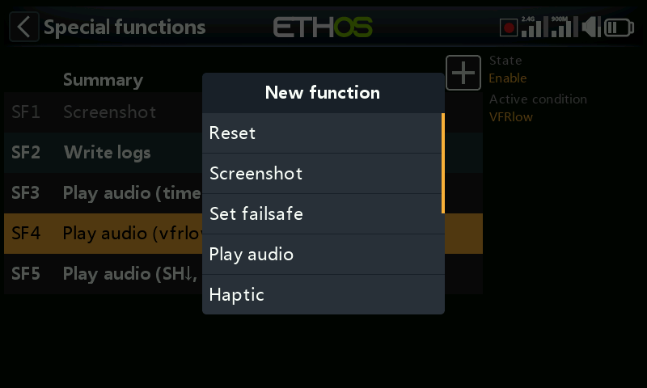
פונקציות מיוחדות מפעילות פעולה — השמעת שמע, צילום מסך, כתיבת יומנים, משוב רטט ועוד — כאשר תנאי מסוים מתקיים. נתמכות עד 100 פונקציות; כברירת מחדל לא קיימת אף אחת. הוספה מתבצעת באמצעות +; הקשה על פונקציה קיימת מציגה עריכה/הזזה/העתקה-הדבקה/שכפול/מחיקה.
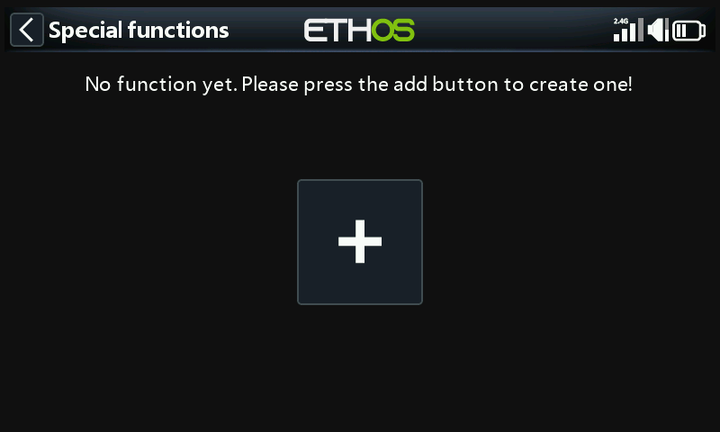
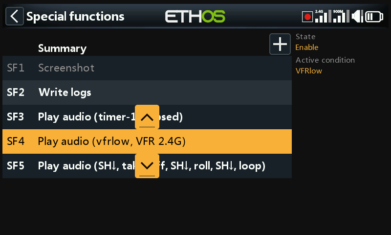
שדות המשותפים לכל הפעולות¶
- מצב — הפעלה/כיבוי של הפונקציה ללא מחיקתה.
- תנאי הפעלה — דלוק תמיד, או מותנה במתג/מתג פונקציה/מתג לוגי/מצבי
טרים או מצבי טיסה. לחיצה ארוכה על
ENTעל מתג וסימון שלילי תהפוך אותו (לדוגמה,SG-upהופך ל-!SG-up, פעיל בכל מצב שבו SG אינו למעלה). - גלובלי — מוסיף את הפונקציה לכל כל הדגמים, הקיימים והעתידיים.
אם בדגם כלשהו קיימת כבר פונקציה מקומית בעלת תצורה זהה, האפשרות גלובלי
תוסיף אותה כרשומה נוספת; כיבוי האפשרות גלובלי מסיר אותה מכל הדגמים
למעט זה שנבחר כרגע. פונקציות גלובליות מאוחסנות בקובץ
radio.bin; פונקציות מקומיות מאוחסנות בקובץ הדגם.
פעולות¶
איפוס — מאפס נתוני טיסה (טלמטריה + טיימרים), כל הטיימרים, או כל הטלמטריה.
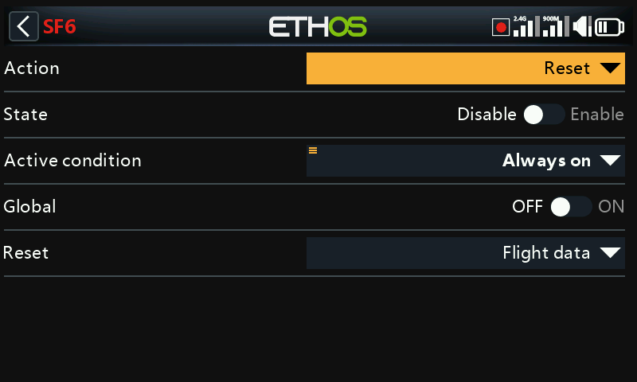
צילום מסך — שומר צילום מסך בתיקייה screenshots/ שב-SD card/eMMC.
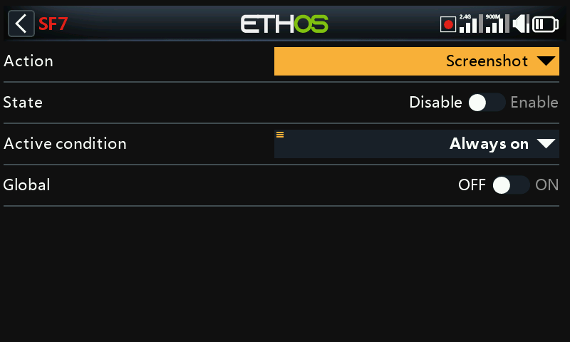
הגדרת failsafe — לוכד את מצבי הערוצים הנוכחיים כ-failsafe, דרך מודול ה-RF הפנימי או החיצוני (Module).
השמעת שמע — הפעולה העשירה ביותר, התומכת ברצף שלם:
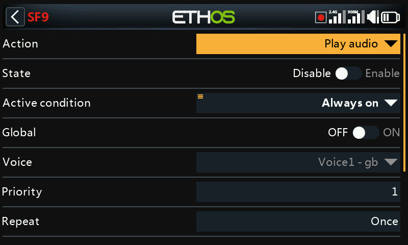
- קול — באיזה מבין עד 3 הקולות המוגדרים להשתמש (ראו כללי).
- חזרה — השמעה פעם אחת, או חזרה במרווח זמן הניתן להגדרה (עד 10 דקות).
- דילוג בעת האתחול — מונע הפעלת הפונקציה במהלך האתחול.
-
רצף — עד 100 שלבים, כל אחד מהם אחד מאלה:
-
השמעת קובץ — משמיע קובץ שמע נבחר.
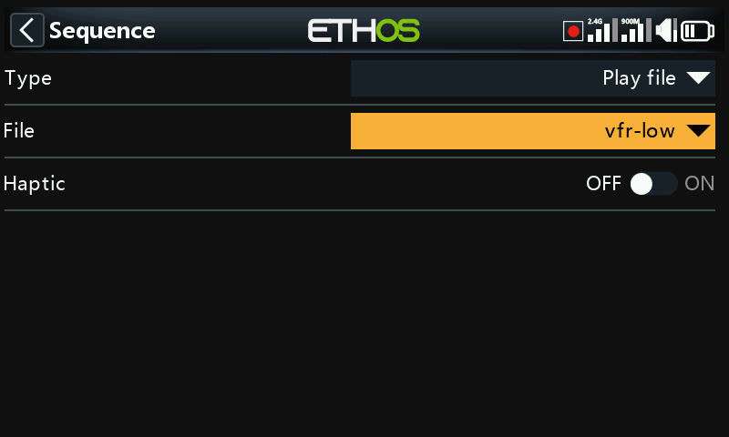
-
השמעת ערך — מקריא את ערכו של מקור: אנלוגיים, מתגים, מתגים לוגיים, טרימים, ערוצים, ג'ירו, שעון המערכת, trainer, טיימרים או טלמטריה.
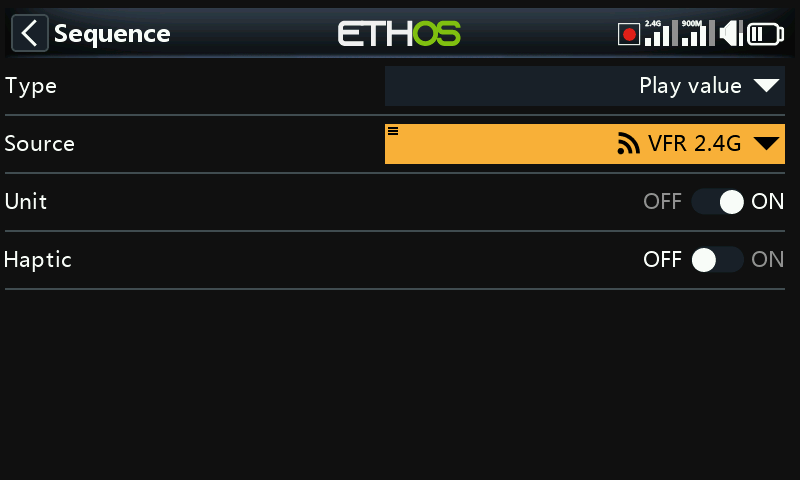
-
המתנה למשך זמן — השהיה קבועה, עד 10 דקות.
- המתנה לתנאי — משהה את הרצף עד להתקיימות תנאי.
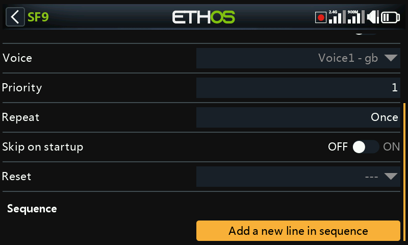
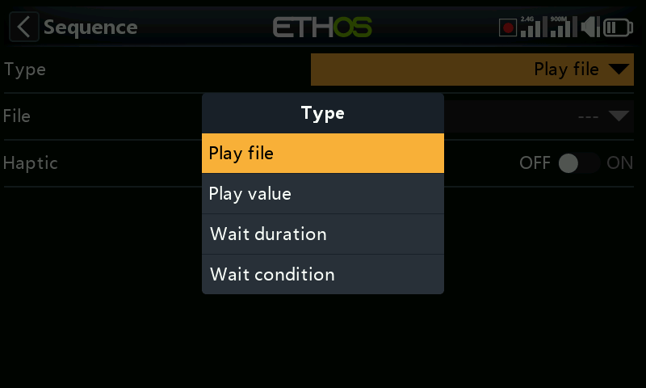
לדוגמה: השמעת vfrlow.wav כאשר המתג הלוגי VFRlow נעשה פעיל, ולאחר
מכן הקראת ערך ה-VFR המינימלי שנרשם —
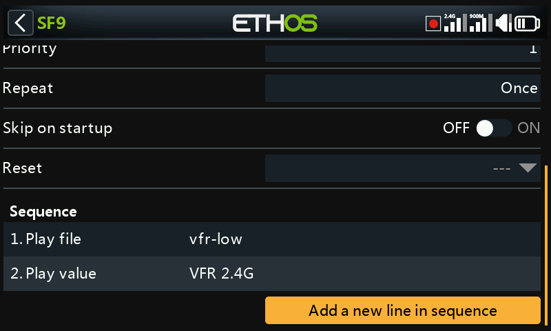
— או השהיית רצף עד שהמתג SH יועבר למטה, לפני ההמשך:
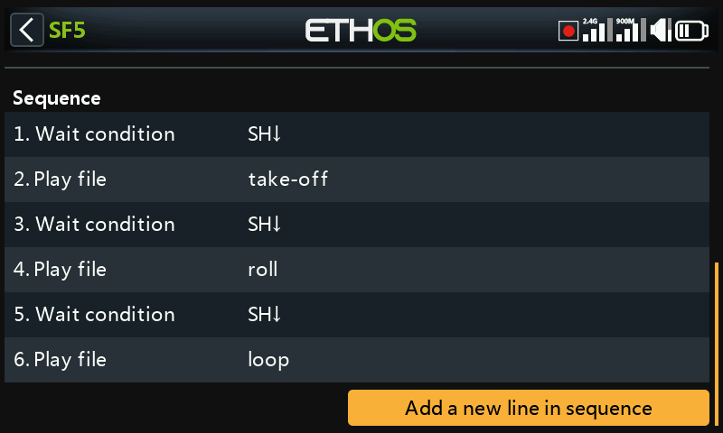
הקישו על שורת רצף כלשהי לעריכתה, להוספה, לשינוי סדר או למחיקה:
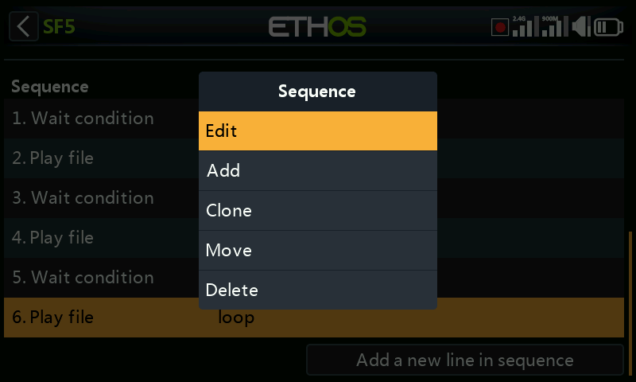
רטט — משוב באמצעות רטט:
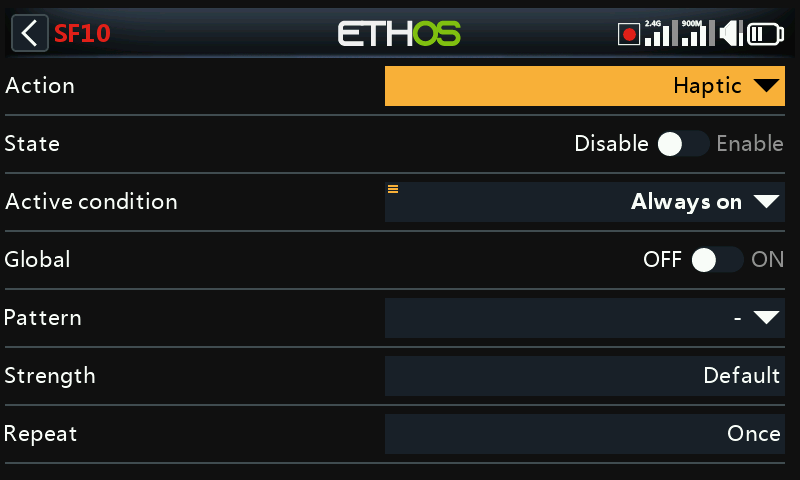
- תבנית — בודד, כפול, משולש, חמישייה, או קצר מאוד.
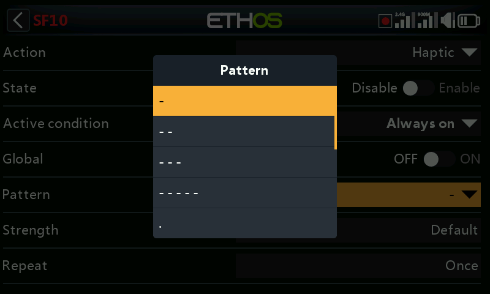
- עוצמה — 1–10 (ברירת מחדל 5).
- חזרה — פעם אחת, או במרווח זמן מוגדר.
- בחירת מנועי רטט — במשדרים בעלי מנועי רטט בג'ימבלים (X20 Pro AW, X20RS, או X20 Pro/X20R שעודכן עם ג'ימבלים מסוג MC20R — ראו חומרה): ברירת מחדל (רטט פנימי), כל המנועים, ג'ויסטיק שמאלי, או ג'ויסטיק ימני.

כתיבת יומנים — כותבת יומני .csv לתיקייה Logs/ שב-SD card/eMMC,
עם חתימת זמן מה-RTC (הכרחי כדי להבחין בין מפגשי טיסה שונים בדיעבד):
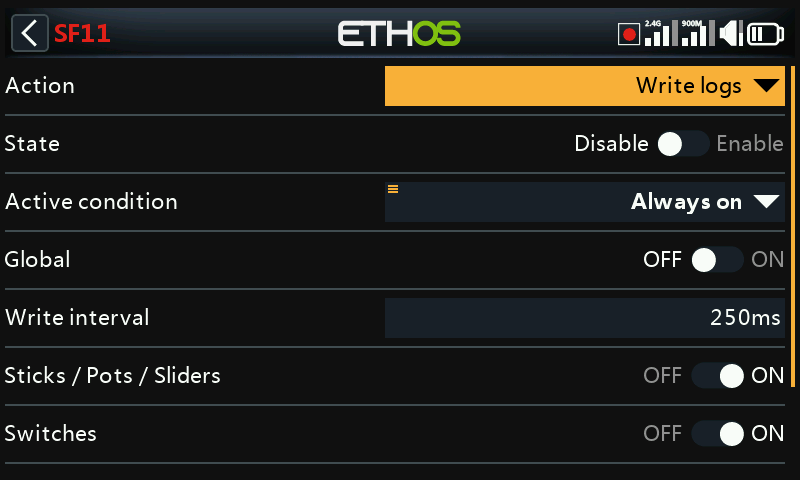
- מרווח כתיבה — 100–500ms.
- ג'ויסטיקים/פוטנציומטרים/מחוונים, מתגים, מתגים לוגיים, ערוצים — קטגוריות רישום שניתן להפעיל בנפרד.
צפייה ביומנים: פתחו קובץ יומן מתוך /Logs במנהל הקבצים. בחרו אילו
ערוצים לשרטט (RSSI נבחר כברירת מחדל); הזזה מתבצעת באמצעות המסובב או
החלקה, וזום על ידי סיבוב המסובב תוך החזקת PAGE. DISP מעביר את
המיקוד ללחצן הראשון בטור הימני.
השמעת טקסט (X20 Pro בלבד) — המרת טקסט לדיבור במשדר עצמו, במקום קובץ מוקלט מראש:
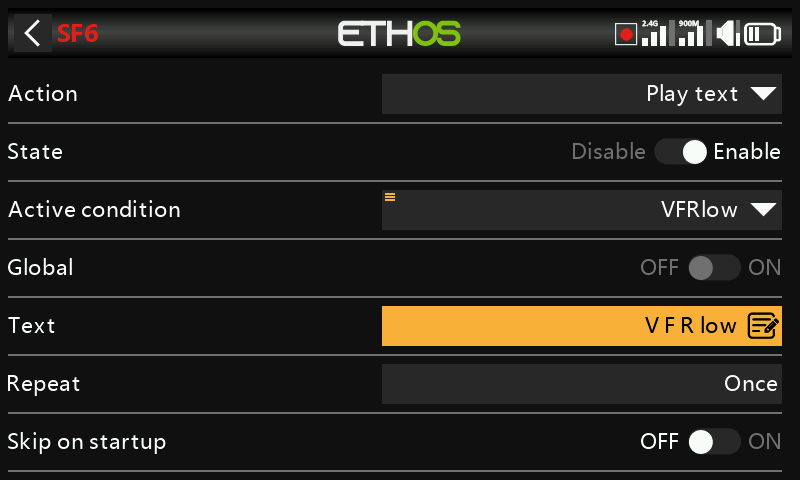
- טקסט — המחרוזת שתוקרא. אותיות רישיות בלבד מאייתות אות-אות (לדוגמה, "OFF" → "O-F-F"); אותיות קטנות מוקראות כמילה ("off").
- חזרה, דילוג בעת האתחול — כמתואר לעיל.
מעבר למסך — מעביר את התצוגה למסך נבחר, לדוגמה מעבר לרשומת נתוני הטיסה של מקלט בעת לחיצה על לחצן:
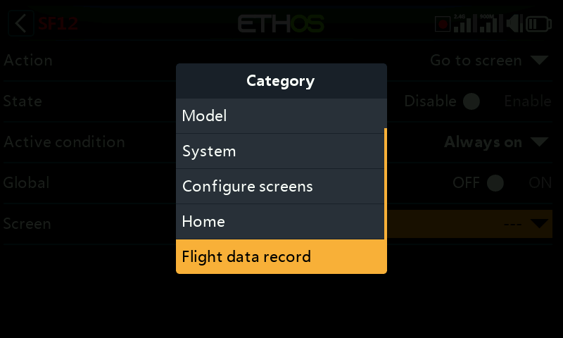
נעילת מסך המגע — נועלת את מסך המגע כנגד קלט בשוגג (זמינה גם ישירות
באמצעות החזקת ENT + PAGE יחד למשך שנייה אחת ממסך הבית):
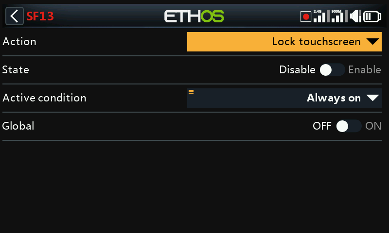
טעינת דגם — טוענת דגם מסוים בעת ההפעלה, עם אפשרות לאישור לפני ביצוע המעבר בפועל:
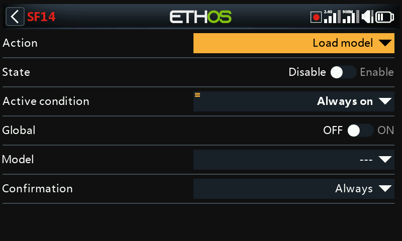
השמעת vario — מפעילה שמע vario ממקור נבחר (בדרך כלל חיישן VSpeed של vario מתוצרת FrSky, אך כל חיישן שיחידותיו m/s יתאים):
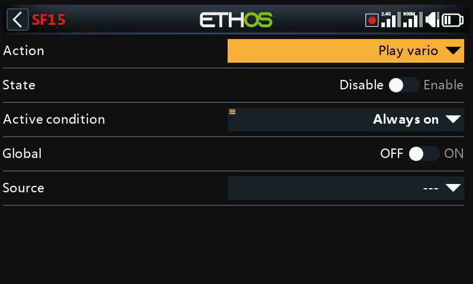
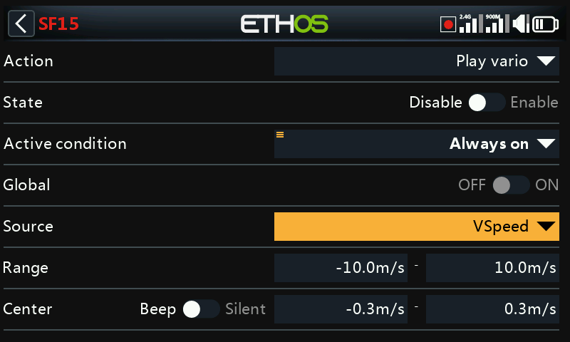
- טווח — קצב הטיפוס/הצניחה ממופה לגובה הצליל, ברירת מחדל ±10m/s (עד ±100m/s). מעל המרכז, גובה הצליל עולה באופן לינארי עם קצב הטיפוס עד לערך המקסימלי של הטווח (גובה הצליל בקצב המקסימלי נקבע ב-כללי → Vario); צניחה מפיקה צליל רציף שגובהו יורד לכיוון הערך המינימלי של הטווח.
- מרכז — תחום "טיפוס אפס", ברירת מחדל ±0.3m/s (עד ±2m/s); בתוכו גובה הצליל קבוע (גובה הצליל בקצב אפס נקבע אף הוא ב-כללי → Vario). מעבר מ-Beep ל-Silent משתיק את הצליל לחלוטין.
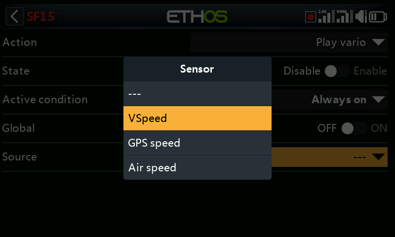